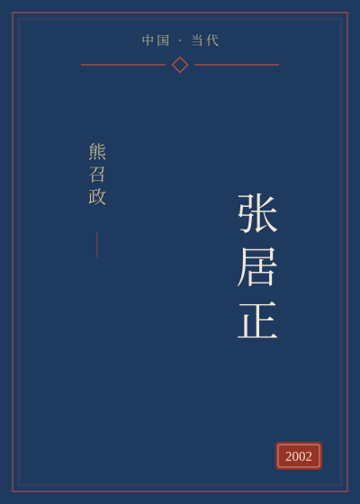
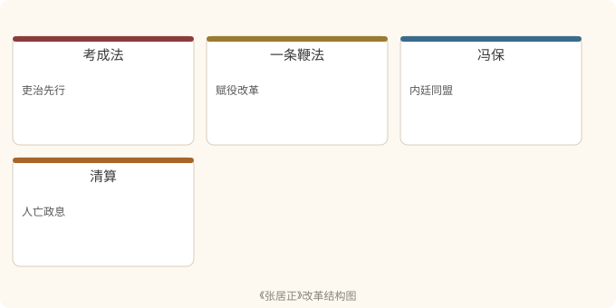

张居正
一、基本信息
| 作者 | 熊召政 |
|---|---|
| 成书/出版 | 第六届茅盾文学奖获奖作品（中国作家网官方名单 C012：第六届1999—2002、长江文艺出版社；四卷出版年1999—2002说待核） 历届茅盾文学奖获奖作品一览（中国作家网）（官方文学机构） |
| 国别/地区 | 中国 |
| 时代 | 现当代 · 当代 |
| 体裁 | 长篇历史小说 |
| 语言 | 汉语（白话） |

《张居正》改革结构图（主题·结构图）
二、创作背景
中国作家网官方名单（C012）：第六届（1999—2002）茅盾文学奖获奖作品《张居正》熊召政。
题材：明代万历首辅张居正的改革十年（通说）。
三、内容脉络
改革线：考成法、一条鞭法与清丈田亩（通说）。
权谋线：冯保、太后与言官的角力（通说）。
人亡政息：身后的清算（通说待核）。
四、主要人物表
| 人物 | 身份 | 说明 |
|---|---|---|
| 张居正 | 首辅 | 改革者（通说） |
| 万历帝 | 皇帝 | 由倚重到猜忌（通说） |
| 冯保 | 司礼监 | 内廷盟友（通说） |
五、主题与艺术特点
- 改革者的权与弊：'苟利社稷，生死以之'式的担当（通说）。
- 历史小说的政治经济学（通说）。
- 庙堂叙事的百科肌理（通说）。
六、影响与评论
- 中国作家网官方名单：第六届茅盾文学奖获奖作品、长江文艺出版社（C012）。
历届茅盾文学奖获奖作品一览（中国作家网）（官方文学机构） - 历史小说的当代复兴：茅奖序列中的明史题材（通说）。
历届茅盾文学奖获奖作品一览（中国作家网）（官方文学机构）
七、阅读建议
难点
- 明代官制与文书流程注释。
- 四卷体量——按卷推进。
- 《张居正》（长江文艺出版社，C012 官方名单口径）。
对照《万历十五年》（通说）：文学与史学的两种万历。
八、待核实
- 四卷标题（木兰歌/水龙吟/金缕曲/火凤凰说）核对。
- 熊召政生年与湖北籍贯待核。
- 与姚雪垠的论争公案待核。
本页主要来源
熊召政的其他收录作品：张居正